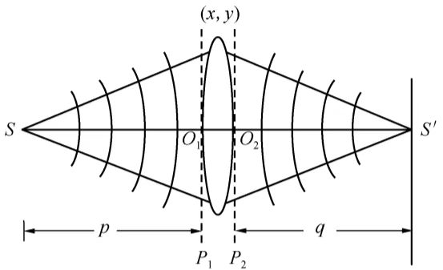
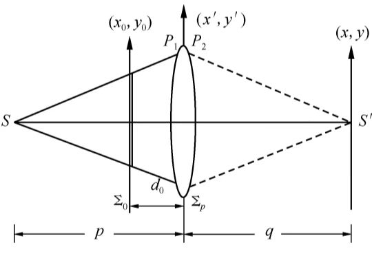

要在衍射屏后面的自由空间观察Fraunhofer衍射，其条件是相当苛刻的.
要想在近距离观察Fraunhofer衍射，是借助会聚透镜实现的.
在单色平面波垂直照射衍射屏的情况下，Fraunhofer衍射就是屏函数的Fourier变换.
对透射物品进行Fourier变换运算的物理手段是实现其Fraunhofer衍射，也就是说，透镜可以用来实现物体的Fourier变换.
透镜是光学系统最基本的元件，正是由于透镜在一定条件下能实现Fourier变换，才使得Fourier分析方法在光学中得到如此广泛的应用.
研究一个无像差的正薄透镜对点光源的成像过程.

如图所示：
由于考虑的是薄透镜，光线通过透镜时入射与出射的高度相同.
从几何光学观点看，图中所示的成像过程为点物成点像.
从波面变换观点看，透镜将一个发散球面波变成一个会聚球面波.
为了研究透镜对入射波面的变换作用，引入透镜的复振幅透过率\(t(x,y)\).
傍轴近似下，位于\(S\)点的单色点光源发出的发散球面波在\(P_1\)平面上造成的场分布为：
$$U_1(x,y) = Ae^{ikp}e^{i\frac{k}{2p}(x^2 + y^2)}$$式中，\(A\in\mathbb{C}\)，表明在傍轴近似下，平面\(P_1\)的振幅分布是均匀的，发生变化的只是相位.
此球面波经透镜变换后向\(S'\)点会聚，忽略透镜的吸收，其在\(P_2\)平面上造成的复振幅分布为：
$$U_1'(x,y) = Ae^{-ikq}e^{-i\frac{k}{2q}(x^2 + y^2)}$$补充：会聚/发散球面波
忽略不影响\(P_1\)与\(P_2\)平面上相对相位分布的常数项因子（\(e^{ikp}\)与\(e^{-ikq}\)），可得透镜的复振幅透过率或相位变换因子为：
$$t(x,y) = e^{-i\frac{k}{2}(x^2 + y^2)\left(\frac{1}{q} + \frac{1}{p}\right)}$$由透镜成像的Gauss公式：
$$\frac{1}{q} + \frac{1}{p} = \frac{1}{f}$$透镜的相位变换因子可简单表示为：
$$t(x,y) = e^{-i\frac{k}{2f}(x^2 + y^2)}$$上式表明，通过透镜的相位变换作用，将一个发散球面波变换成了汇聚球面波.
当一个单位振幅的平面波垂直于\(\text{P}_1\)面入射时，其在\(\text{P}_1\)面上造成的复振幅分布\(U_1(x,y) = 1\)，在\(\text{P}_2\)面上造成的复振幅分布为：
$$U_1'(x,y) = U_1(x,y)t(x,y) = e^{-i\frac{k}{2f}(x^2 + y^2)}$$傍轴近似下，这是球面波表达式.
若考虑透镜孔径的有限大小，用\(P(x,y)\)表示孔径函数（光曈函数）.
透镜的相位变换因子可写为：
$$t(x,y) = P(x,y)e^{-i\frac{k}{2f}(x^2 + y^2)}$$透镜对光波的相位变换作用，是由透镜本身的性质决定的，与入射光波复振幅\(U_1(x,y)\)的形式无关.
只要傍轴条件满足，薄透镜就会以上式的形式对\(U_1(x,y)\)进行相位变换.
正透镜除了具有成像性质外，还能作Fourier变换.
下面分别就透明片（物）放在透镜之前与之后两种情况进行讨论.

如图所示：
按信息光学中的习惯，与一般应用光学中的符号规则不同，此处\(p,q,d_0\gt 0\).
[设]薄透孔径很大，抽象为无穷大.
傍轴近似下，单色点光源发出的球面波在物的前表面造成的场分布为：
$$A_0\exp\left[ik\frac{x_0^2 + y_0^2}{2(p-d_0)}\right]$$